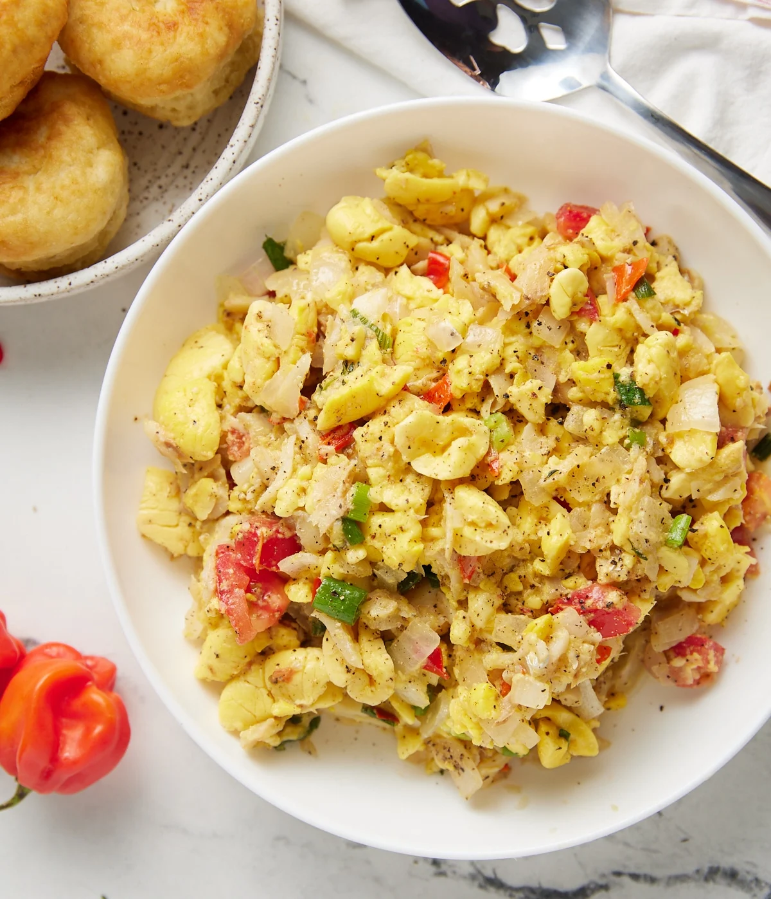

Ackee & saltfish

Description
Ackee and saltfish is the National dish of Jamaica, made with salted codfish and the national fruit ackee. Jamaican ackee and saltfish is very easy to make and goes with just about any side.
Ingredients
- 1 teaspoon(s) Grace caribbean traditions black pepper
- 1 small sweet pepper, julienne
- 1 can(s) Grace ackee in brine, drained
- 1 teaspoon(s) scotch bonnet pepper, chopped
- 1 medium onion, chopped
- 1 medium tomato, chopped
- 1 tablespoon(s) Grace Vegetable Oil
- 2 stalk(s) escallion, chopped
- ½ pound(s) saltfish
- 2 clove(s) garlic, chopped
Steps
- Put saltfish to soak in cold water for about 1 hour
- Pour off water; add fresh water and cook until tender
- De-bone and flake saltfish
- Heat Grace Vegetable Oil and saute onion; garlic; escallion; tomato; scotch bonnet pepper and sweet pepper. Add flaked saltfish; Grace Ackee and Grace Caribbean Traditions Black Pepper
- Toss lightly; cover and allow to stand over low heat for about 2 minutes.